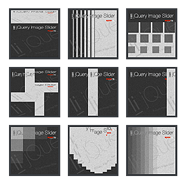

It is time to impress!
liJQuery Image Slider is carefully crafted slider/image rotator, full of features, easy to install and customize. Whenever you need a full featured slider image rotator or you need a simple ad banner, liJQuery Image slider will do the job with ease!
This robust and yet elegant guy, has everything you need to build your next “to-impress” image slider.
Features
- Auto Play on start. With this option turned on the banner will start rotating the images immdeiatelly when the page is loafed
- Auto Hide All Buttons. Easy to adjust buttons' hiding and showing speed and delay (how long to wait before hiding the buttons)
- Continuous sliding which could be turned of or on easily upon banner inicialization.
- Adjustable delay between slides for all the slides in the slider or per slide
- Adjustable slide displaying time for all the slides in the slider or per slide
- Play/Pause buttons
- More than 47 different transitions
- 7 different skins
- 6 different pre-defined ad sizes
- iPhone/Smart Phone compatible. We've tested it. We've optimized it. We made it versatile, so you know your content will be delivered to all devices and platforms.
- Multiple Sliders/Banners on one page
- Animated GIF Slider Preloader. There is nothing better than to aware the visitor that something will show up soon. The preloader will be visible until all the images included in the banner are downloaded. After that it is automatically hidden.
6 Pre-defined Ads sizes
liJQuery Slider is especially developed to support Ad Banners and with liJQuery It is easy to create a AD BANNER - in no time! Define your images in the HTML and upload your Ad in less then 5 minutes. The pre-defined ads sizes, are a great and flexible tool to make your ads quickly and efficiently, to save time and money.
Additionally to this, liJQuery Slider/Banner Image rotator makes it easy to place multiple sliders on one page.
Transitions
We preloaded liJQuery Slider with total 47 transitions, so you can open up your imagination and create the most impressive sliders. Many of the transitions have options for fine tune, and you are able to define each slide's transition type and transition duration individually.
We'd love to recieve your feedback
Althoug we can't promise huge free upgrades, we'd love to hear what you think about liJQuery Image Slider/Rotator and some of your suggestions will be implemented in the future versions. If you have an issue or you feel that you desire to share your excitement about your new slider, we'd love to see a website link with the slider or just to recieve a comment. Please, feel free to use our Codecanyon contact form or just send us an email.
Last but not least, we will greatly apprecate if you rate this slider on your Downloads page.